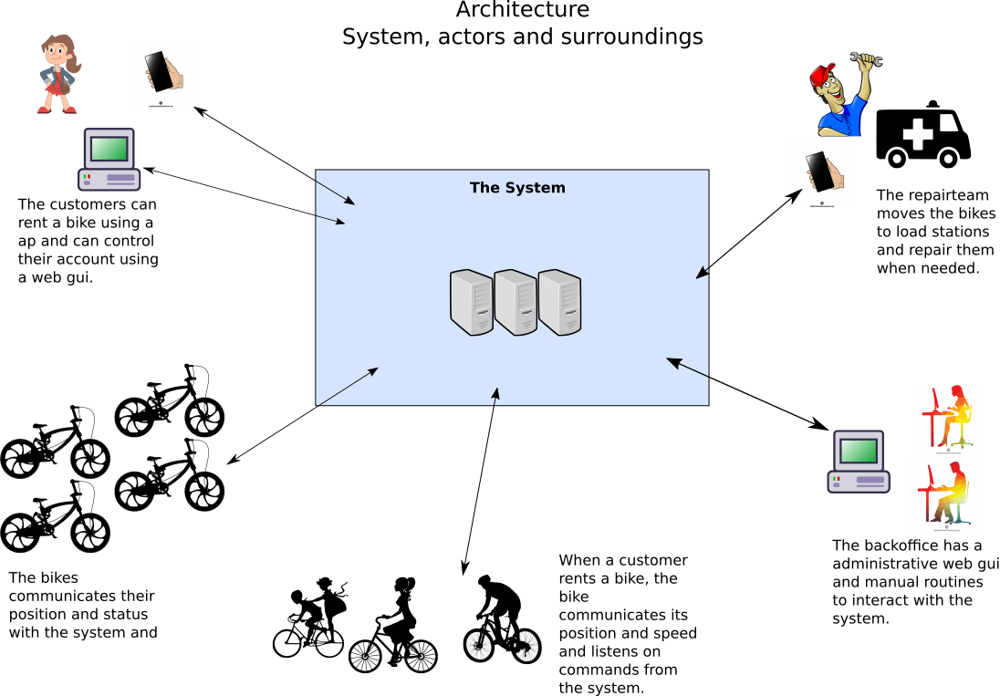
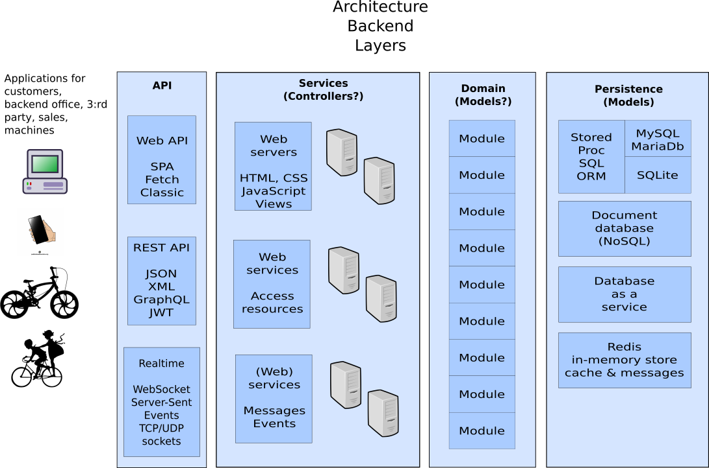

<!doctype html>
<html class="theme-5">
<meta charset="utf-8" />
<link href="../html-slideshow.bundle.min.css" rel="stylesheet" />
<link href="../style.css" rel="stylesheet" />
<script src="https://dbwebb.se/cdn/js/html-slideshow_v1.1.0.bundle.min.js"></script>

<title>Seminarie</title>

<script data-role="slide" type="text/html" data-markdown class="titlepage center">
# Seminarie
## Vecka 3
### Mikael Roos
</script>


<script data-role="slide" type="text/html" data-markdown>
# Agenda

* Architecture
* Client side techniques
* Docker
* Popular techniques
* Softer issues on team work
* Tip

</script>


<script data-role="slide" type="text/html" data-markdown class="titlepage center">
# Architecture
</script>


<script data-role="slide" type="text/html" data-markdown class="center">
# Overview system

<figure>

<figcaption>Trying to explain a system view.</figcaption>
</figure>

</script>


<script data-role="slide" type="text/html" data-markdown class="center">
# MVC

<figure>

<figcaption>Trying to explain the MVC design pattern.</figcaption>
</figure>

</script>


<script data-role="slide" type="text/html" data-markdown class="center">
# Backend

<figure>

<figcaption>Trying to explain the backend view.</figcaption>
</figure>

</script>


<script data-role="slide" type="text/html" data-markdown class="titlepage center">
# Client side techniques
</script>


<script data-role="slide" type="text/html" data-markdown>
# Clients

* Kundens admin
    * Web classic (server rendered pages)
    * Single page application/SPA (load it all on the browser)
    * Electron framework (desktop)

</script>


<script data-role="slide" type="text/html" data-markdown>
# Clients...

* Slutkundens mobila app
    * Web classic
    * Single page application/SPA
    * Progressive web app/PWA
    * Cordova (compile down to native)
    * Native apps

</script>


<script data-role="slide" type="text/html" data-markdown>
# Clients...

* Simulering
    * Python
    * Node
    * Bash

</script>


<script data-role="slide" type="text/html" data-markdown class="titlepage center">
# Docker
</script>


<script data-role="slide" type="text/html" data-markdown>
# Docker

* Ett repo med exempel
    * https://gitlab.com/mikael-roos/docker

</script>


<script data-role="slide" type="text/html" data-markdown class="titlepage center">
# Popular techniques
</script>


<script data-role="slide" type="text/html" data-markdown>
# Att välja teknik

* Vilka programmeringsspråk skall vi lära ut?

> "Mer fokus på koncept och mindre på språk och ramverk (det är väl ingen yrkeshögskola)!"

</script>


<script data-role="slide" type="text/html" data-markdown>
# Platsbanken

* [PHP](https://arbetsformedlingen.se/platsbanken/annonser?q=PHP)
* [JavaScript](https://arbetsformedlingen.se/platsbanken/annonser?q=JavaScript)
* [Node](https://arbetsformedlingen.se/platsbanken/annonser?q=Node)
* [C#](https://arbetsformedlingen.se/platsbanken/annonser?q=C%23)
* [.NET](https://arbetsformedlingen.se/platsbanken/annonser?q=.NET)
* [Python](https://arbetsformedlingen.se/platsbanken/annonser?q=python)
* [Java](https://arbetsformedlingen.se/platsbanken/annonser?q=java)
* [C++](https://arbetsformedlingen.se/platsbanken/annonser?q=C%2B%2B)
* [Bash](https://arbetsformedlingen.se/platsbanken/annonser?q=bash)

</script>


<script data-role="slide" type="text/html" data-markdown class="titlepage center">
# Softer issues
## Team work
</script>


<script data-role="slide" type="text/html" data-markdown>
# Whats needed?

> Några tankar om vart vi är på väg med tekniken och vilka tekniker vi använder?

> Någon tanke på vad som "saknas" hos nyutexaminerade?

* [The view from a team leader with staff responsibility on a larger software product/service company](https://gist.github.com/mosbth/76a4d7a503e45692d28c4c0dcd029703)

</script>


<script data-role="slide" type="text/html" data-markdown>
# Team som tar ansvar

> Hur ser industrin på att organisera sig i team och grupper?

* [Martin Mazur - Dagens Industri IT & Strategy](https://www.linkedin.com/feed/update/urn:li:activity:6861311477781970944/)
* Företagen vill ha effektiva team (och medarbetare)

</script>


<script data-role="slide" type="text/html" data-markdown>
# Skillnad på programmerare?

> "[A good programmer can be as 10X times more productive than a mediocre one](https://softwareengineering.stackexchange.com/questions/179616/a-good-programmer-can-be-as-10x-times-more-productive-than-a-mediocre-one)"

* Stämmer det?
* Hur hanterar man det?

* [Individual Productivity Variation in Software Development](https://www.construx.com/blog/productivity-variations-among-software-developers-and-teams-the-origin-of-10x/)
* [Origins of 10X - How Valid is the Underlying Research?](https://www.construx.com/blog/the-origins-of-10x-how-valid-is-the-underlying-research/)

</script>


<script data-role="slide" type="text/html" data-markdown>
# Hjältar - behövs de?

* Vad är en hjälte i ett programmeringsprojekt?

> "Det här håller inte, vi tar och skriver om kärnan över helgen."

</script>


<script data-role="slide" type="text/html" data-markdown>
# Lästips The Deadline

* The Deadline: A Novel About Project Management
* [Läs om boken](https://wiki.c2.com/?TheDeadline).

</script>


<script data-role="slide" type="text/html" data-markdown>
# Tips

* Lär känna ditt team
* Håll ihop teamet
* Försök skapa effektiva team
* Det finns 10x och 1x - hantera det
* Hjältar behövs ibland, men försök undvika att använda det kortet, risk att teamet tar skada, hjältarna bränns upp, individualisterna flyttar på sig

</script>


<script data-role="slide" type="text/html" data-markdown>
# Råd

* x10 - håll ihop ditt team och dra nytta av dem, undvik att bli hjälten som bränns ut
* x1 - lär dig ett fåtal tekniker väldigt bra, bidra till teamet på olika sätt
* Teamleader - Håll ihop teamet i vått och torrt, ge utrymme och bygg för ansvarstagande och kundfokus
* Chef - Se till att dina teamleader har utrymme att lyckas och misslyckas
* Produktledare - försök knyta ihop kundens önskemål med teamets kunnande
* Ta fight på rätt plats på rätt sätt, integritet

</script>


<script data-role="slide" type="text/html" data-markdown class="titlepage center">
# The end
</script>


<script data-role="slide" type="text/html" data-markdown>
</script>


</html>
